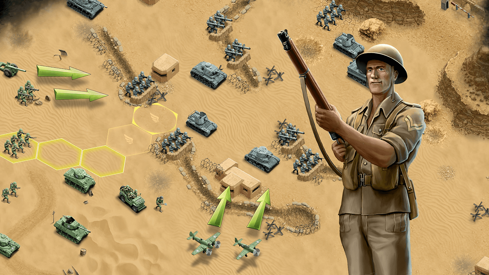
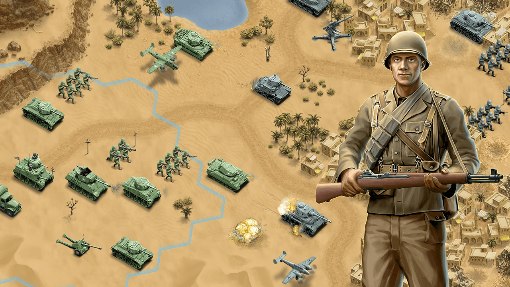
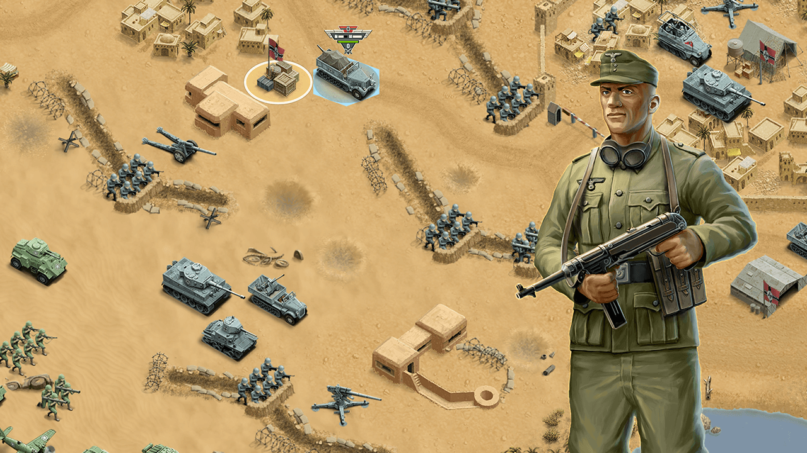

Welcome to the official webpage of enterlogies studios! Our main target is to bring entertainment to
the public by using the power of technologies. Be tuned to our social profile on facebook to know what
we are actually doing!
More Games

SKY UI
SKYUI is a mode that aims to improve Skyrim's User Interface by making it easier to use with mouse and keyboard.

Calientes Female Body Mod
This is a Skyrim body repalcer that replaces the base female body with one that is a little more curvacious.

Enhanced Lights and FX
Enhanced Lights and Fx has the goal to create a more-dramatic and realistic mood to the Skyrim lights.
Race Menu
The RaceMenu was redesigned with the intent of using SKSE to alllow for more in-depth customization of your character.
Footprints
Adds footprints to the player,NPC's and creatures,Initial release contains snow footprints for the player/NPCs.
aMidianBorn Book of Silence
This huge project aims to retexture all armors are and many weapons in Skyrim wasteful of available screen space,and nicer to look at.